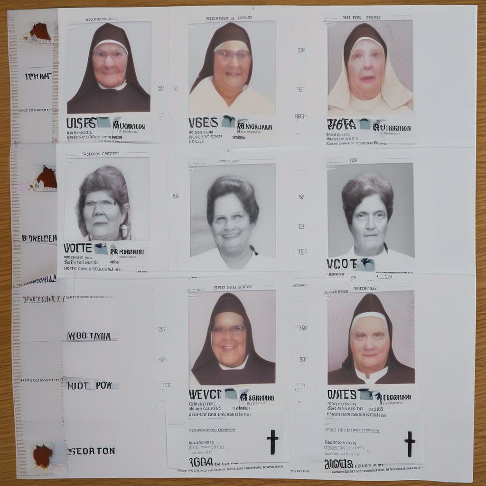

<style>
.image_examples_div{
    display: flex;
    gap: 5px;
    flex-direction: row;
  
}
  
.image_example{
width: 25%;
  text-align:center;
} 

.sing_example_image{
    max-width: 100%;
  border: 2px;
  border-style: solid;
  border-color: black;
  }
</style>


<nav class="uk-container">
<ul class="uk-breadcrumb">
<li><a href="../../index.html">Touché</a></li>
<li><a href="../../shared-tasks.html">Shared Tasks</a></li>
<li class="uk-disabled"><a href="#">Image Retrieval/Generation for Arguments 2024</a></li>
</ul>
</nav>

<main class="uk-section uk-section-default">
<div class="uk-container">
<div class="uk-container uk-margin-small">
<h1 class="uk-margin-remove-top uk-margin-remove-bottom">Image Retrieval/Generation for Arguments 2024</h1>
<ul class="uk-list">
<li><span data-uk-icon="chevron-down"></span><a class="uk-margin-small-right" href="#synopsis">Synopsis</a></li>
    <li><span data-uk-icon="chevron-down"></span><a class="uk-margin-small-right" href="#submission">Submission</a></li>
<li><span data-uk-icon="chevron-down"></span><a class="uk-margin-small-right" href="#data">Data</a></li>
<li><span data-uk-icon="chevron-down"></span><a class="uk-margin-small-right" href="#example">Example</a></li>

<!--
<li><span data-uk-icon="chevron-down"></span><a class="uk-margin-small-right" href="#evaluation">Evaluation</a></li>
<li><span data-uk-icon="chevron-down"></span><a class="uk-margin-small-right" href="#tira-quickstart">TIRA Quickstart</a></li>
<li><span data-uk-icon="chevron-down"></span><a class="uk-margin-small-right" href="#results">Results</a></li>
<li><span data-uk-icon="chevron-down"></span><a class="uk-margin-small-right" href="#related-work">Related Work</a></li>
-->
<li><span data-uk-icon="chevron-down"></span><a class="uk-margin-small-right" href="#task-committee">Task Committee</a></li>
</ul>
</div>

<div class="uk-container uk-margin-medium">


<h2 id="submission">Submission</h2>

<p>We allow three kinds of submissions. Each of the submission styles is displayed in the example.</p>

<ol>
<li> Retrieval. Like in the last years, participants can retrieve suitable images from a focused crawl, where we also provide automatically recognized text from the image (OCR) and text from web pages that contain the image.</li>
<li> Prompted Generation. Following the idea of the infinite index, participants can submit prompts for the Stable Diffusion image generator. </li>
<li> Direct. Participants can employ other reproducible methods for generating images and directly submit them. This includes chart generators, which can generate a bar chart from given numbers in the premise. Also, one can use headline generators
  to transform the premise into a headline. </li>
</ol>

Images can be rated in several ways.

<table>
  <tr>
    <th>Rating</th>
    <th>Description</th>
  </tr>
  <tr>
    <td>-1</td>
    <td>picture is not related with the argument </td>
  </tr>
  <tr>
    <td>0</td>
    <td>picture is very general related to the argument or emphasizes things which are not displayed</td>
  </tr>
  <tr>
    <td>1</td>
    <td>picture relates to the premise, parts of the premise are illustrated. Some showed details are in conflict with the premise</td>
  </tr>
  <tr>
    <td>2</td>
    <td>The image relates to the premise, and illustrates parts of the premise. The picture does not explicitly show things that conflict with the premise.</td>
  </tr>
</table>


<h2 id="synopsis">Rating</h2>
<p>
Let's look at some pictures we can use for discussion
</p>

<h2 id="example">Example</h2>

<p><b>Premise:</b> Indiana’s photo ID law barred twelve retired nuns in
South Bend, Indiana from voting in that state’s 2008
Democratic primary election. The women lacked the photo
IDs required under a state law that was upheld by the U.S.
Supreme Court in April 2008 </p>

<p><b>Claim:</b> Legislation to impose restrictive
photo ID requirements has the potential to block millions
of eligible American voters, and thus suppress the right to
vote</p>
  
<p><b>Topic:</b> This house believes that democratic governments
should require voters to present photo identification at
the polling station></p>

<p><b>Type:</b> Anecdotal</p>


Let's look at some possible pictures and their rating:


<div class="rating">

<div class="image_examples_div">

  <div class="image_example">
  
</div>

<div class="image_example">
  
</div>
</div>

  <p> <b>Relevance:</b> -1</p>
  These images are not relevant to the topic at all. While the Pope may be more broadly associated with nuns, this is too abstract. The movie "The Nun" includes nuns, but a movie poster has nothing to do with our premise.
</div>

<div class="rating">
<div class="image_examples_div">
  <div class="image_example">
    
  </div>
  <div class="image_example">
  
</div>
<div class="image_example">
  
</div>
<div class="image_example">
  
</div>
</div>

  <p> <b>Relevance:</b> 0</p>
  These images are very general, we see nuns that are mentioned in the premise, but they are also doing things that are not mentioned in premise. We might see a voting ballot and nuns but this is displayed very general. 
</div>

<div class="rating">

<div class="image_examples_div">
  <div class="image_example">
  
</div>
<div class="image_example">
  
</div>
<div class="image_example">
  
</div>
</div>

  <p> <b>Relevance:</b> 1</p>
  Here we begin to see the premise in the images.We see nuns and they are casting votes.Although the details are not correct, the premise mentions a group of nuns, and the nuns themselves are retired.
</div>

<div class="rating">
<div class="image_examples_div">
  <div class="image_example">
  
</div>
<div class="image_example">
  
</div>
</div>
<p> <b>Relevance:</b>2</p>
We see the premise illustrated in the images. Older nuns are casting votes. 
</div>


<p>An alternative system of voting, counting of possible aspects</p>

<table>
  <tr>
    <th>Rating</th>
    <th>Description</th>
  </tr>
  <tr>
    <td>-1</td>
    <td>picture has nothing to do with the argument </td>
  </tr>
  <tr>
    <td>0</td>
    <td>picture is very general related to the argument or emphasizes things which are not displayed</td>
  </tr>
  <tr>
    <td>1</td>
    <td>picture conveys at least two aspects of the premise</td>
  </tr>
  <tr>
    <td>2</td>
    <td>picture conveys at least three aspects of the premise</td>
  </tr>
</table>

<p>
In addition pictures can be aesthetically pleasing, we introduce an extrapoint for aesthetics or composition. E.g. one likes the conversation</p>

</div>
</div>
</main>
